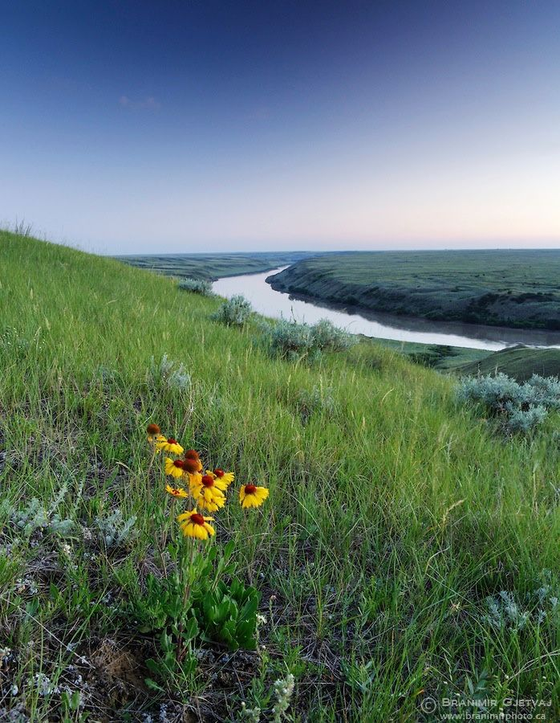

TREATY 4
EXPECTATIONS
When Treaty 4 was signed, many First Nations understood it as an agreement to share the land rather than give it up completely. They expected to continue their traditional ways of life, including hunting, fishing, and practicing their culture, while also receiving support to adapt to changes, such as farming tools, livestock, and education for their children. The treaty was seen as a partnership with the Canadian government, where both sides would benefit and where First Nation's leadership and autonomy would continue to be respected.

Map of Treaties

REALITY
The outcomes were quite different. The land became largely controlled by the Canadian government, and First Nations were confined to reserves. Over time, their ability to hunt and fish was restricted, and many of the promised supports were delayed, limited, or poor in quality. Policies such as residential schools caused serious harm by separating children from their families and disrupting language and culture. Instead of an equal partnership, decision-making power was mostly held by the government, and many of the promises made in Treaty 4 were not fully honored.